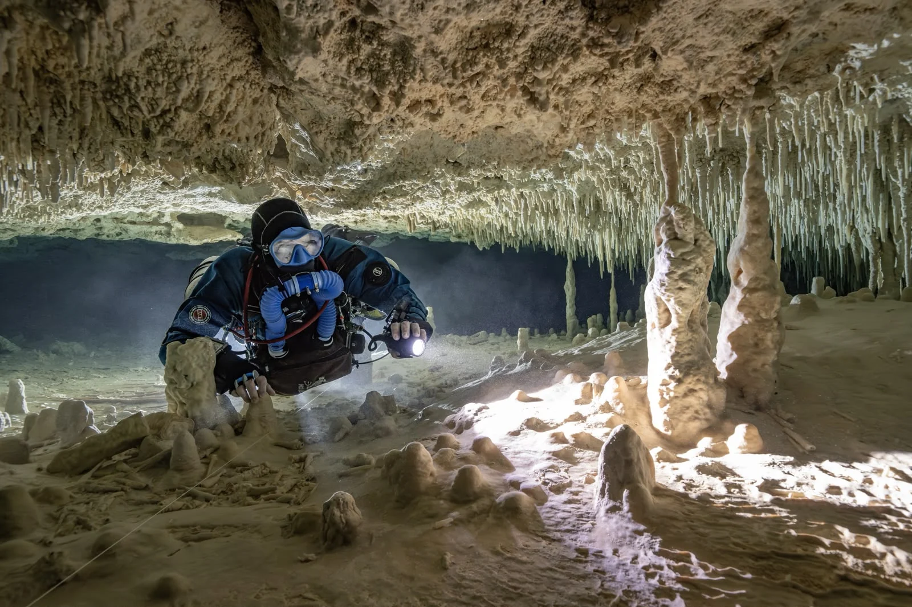

You might think you know adventure. Maybe you’ve done some wreck or reef dives. But cave diving? That’s a whole different beast.
No kidding, it’s something else.I still remember the first time I slipped into a cave in Mexico ( during my Full Cave Course ) . The water was crystal clear, but the light? Gone. Just me and the silence.
It was... honestly a bit nerve wracking at first. Your heart’s pounding, your mind’s racing but then, slowly, you settle in.That moment when you realize you’re surrounded by stone, totally underwater, with no way out except the way you came in? It’s unlike anything else.
You’re not just diving; you’re exploring a secret world that most people will never see.But you don’t just jump into a cave and hope for the best. You earn your place there. That’s where FULL Cave diving courses come in. They teach you how to handle the pressure (both the water pressure and the mental kind). They make sure you know what to do when things go sideways because down there, they will.
Navegating in Otoch Ha
Why This Isn’t “Just Another Dive”
Here’s the thing when you dive in a cave, you’re leaving the surface world behind. No easy exits. No quick surfacing if you freak out. It’s just you, your gear, and your training.
Most divers stick to open water or maybe a cavern dive where sunlight still filters through. That’s fine! But real cave diving? It demands a different mindset.
You have to be methodical, calm, and prepared for everything.I’ve had dives where my main light flickered out halfway through a tunnel. Total blackout. Panic? Nope.
Training kicked in. I switched to backup lights, checked my line, and kept going. That’s what FULL cave diving courses prepare you for.
And trust me, it’s not about being superhuman. It’s about being ready. Being smart.
Tunnel section in Cenote Concha By Carolina Wells
What Real Cave Training Looks Like
You might think, “How hard can it be? I already have my advanced open water cert.”
But cave diving? It’s a whole other game.
When you take FULL cave diving courses with US, you learn to think underwater in a different way. It’s not just about swimming and breathing. It’s about planning every move, every breath, every turn.You’ll practice things like:Using a primary guideline, so you never lose your way Handling zero visibility yeah, sometimes you literally can’t see your hand in front of your face What to do when your main light dies (and it will happen at some point) Planning your air so you always have enough to get back safely
Staying calm, even when everything feels like it’s falling apartWe drill this stuff again and again. Not to scare you, but so it becomes second nature.Because when you’re +300 meters inside a dark cave, you won’t have time to think twice.
Safety Isn’t Optional It’s Everything
Let me say this loud and clear: if your course doesn’t require cave diving courses with safety equipment, walk away.Cave diving isn’t the place to cut corners. You need at least three lights, redundant air supplies, reels, knives, and backup computers. No exceptions.I’ve seen people try to dive with just one light or a single tank. It’s crazy. The cave will test you, and it’ll find every weakness.When you train with the right gear, you’re not just safer you’re more confident.
You relax.
You enjoy the dive.
Student in the entrance of cenote DreamGates
Why We Train in Mexico (and You Should Too)
Mexico’s cenotes are legendary. If you want to get certified, it’s hard to beat training here.The water’s warm, clear, and inviting. The caves? Mind-blowing. Long tunnels, huge caverns, crystal-clear pools that feel like you’re floating in another world.Many of us have trained here. It’s where you really learn to master your skills.Plus, the instructors are rockstars. They’ve logged thousands of dives, know every inch of the system, and run FULL cave diving courses with Us that push you at the right pace.
The Training Path Step by Step
So, how do you go from curious to confident cave diver?
Like this:
Cavern :
You stay close to the entrance.
You stay in sight of natural light.
But you learn to control your buoyancy near delicate formations.
You learn line work.
You start building the mindset.
Intro to Cave :
Now you go further.
No light from the entrance.
Just your team and your training.
You start using reels.
You plan more carefully.
You begin to understand what being in a real overhead environment feels like.
Full Cave :
This is where you get your full certification.
You dive complex routes, simulate failures, practice air sharing, and run circuits.
You plan longer dives, use more gas, and think like a pro.
Each step pushes you a little further. But only when you’re ready.
The Mental Game
Cave diving is as much about your head as your skills.